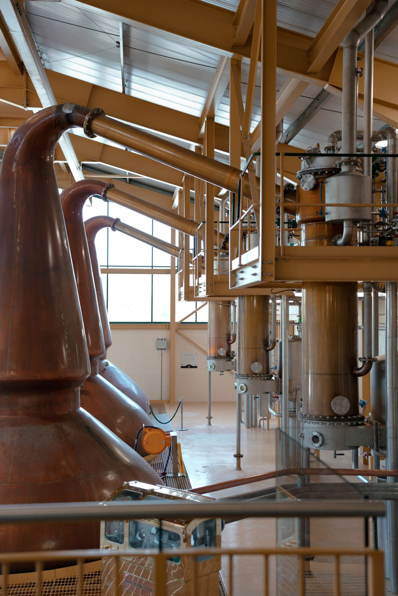

Single Malt Scotch · Distilled, Matured & Poured in Campbeltown
Smoke is a measurement, not a mystery.
I am Hamish Calder, master distiller. I make small runs of single malt — some peated hard, some not at all — and I write the numbers down where you can read them: the phenols in the malt, the cask it slept in, and what the pour costs, worked out in front of you.
Most whisky is sold as weather and poetry. This page sells it as a ledger. If a figure appears here, it is the figure on the cask end, the maltster's specification or the rate card — and where a number is my judgement rather than a measurement, the page says so.
- The still room
- Campbeltown, Argyll
- Distilling since
- 1999 — mash floor first, stills after
- Guided tastings
- First Friday monthly · 14 seats · £28
- The measures
- 25 ml pours · 15 ml flight pours · water always

The Smoke & Cask Explorer
Choose a band. Choose a cask. Read the pour.
Every whisky on this page is a crossing of two decisions: how hard the malt was peated, and what the spirit slept in. Pick one of each and the ledger sheet below fills in — what the band means, what the cask contributes, how to serve it, and the pour price with its working shown.
One honest note before you start: the ppm figure is the phenol content of the malt, as specified to the maltster. It is not the smokiness in your glass. Fermentation, the stillman's cut, the cask and the water in your glass each take their share first. Anyone who sells you ppm as a flavour reading is selling you a number they do not understand.
- The malt
- The cask
- —
- In the glass
- Cask effect
- Serving
| Band | Phenols in the malt | Pour base (25 ml) | What the figure means |
|---|---|---|---|
| Unpeated | 0 ppm | £6 | Hot air only — no peat burned in the kiln. |
| Lightly peated | 1–15 ppm | £7 | A short reek — hours of peat smoke, not days. |
| Medium peated | 16–30 ppm | £9 | Peat smoke through most of the kilning. |
| Heavily peated | 35–55+ ppm | £11 | The smokiest malt specifications asked of maltsters anywhere in Scotland. |
| Cask | Added to the pour | What it brings |
|---|---|---|
| Refill hogshead | +£0 | Spirit first, wood whispering — the slowest, plainest maturation. |
| First-fill bourbon barrel | +£2 | Vanilla, coconut and honey from American oak on its first Scotch fill. |
| Red-wine cask finish | +£3 | A finishing season of months after full maturation elsewhere. |
| Sherry butt · European oak | +£4 | Dried fruit, walnut, spice and the deepest natural colour of the four. |
Strengths, stated properly: house pours are bottled at 43–46% ABV; single casks are bottled at cask strength — whatever the cask gives up, commonly 55–60% — and the bottle says which. Dilution is the drinker's business, not the bottler's secret.
The Flight Card
Build a flight of three or four.
A flight is how the still room teaches smoke: small pours, lightest first, water on the table. Tick three or four from the printed card and the sheet totals them in the open. Every price below is the explorer's own arithmetic — band plus cask — so the two instruments on this page can never disagree.
Your flight card
Flight pours are 15 ml tasting measures. The same card, at the same prices, hangs in the still room — build it here, drink it there.
The Cask Ledger
What is pouring now
The current entries, kept the way the warehouse book is kept: number, name, band, cask, strength, state of play. Bottlings are the practice's own small runs — tens to a few hundred bottles, never thousands.
| Entry | Bottling | Band · malt phenols | Cask | Strength | Status |
|---|---|---|---|---|---|
| PS-014 | The Kiln Yard | Heavily peated · 45 ppm | Refill hogshead | 46% | Pouring now |
| PS-011 | First Filling | Unpeated · 0 ppm | First-fill bourbon barrel | 43% | Bottles · £58 |
| PS-009 | The Long Rest | Medium peated · 22 ppm | Sherry butt | 57.8% cask strength | 214 bottles · £96 |
| PS-006 | Harbour Weather | Lightly peated · 9 ppm | Red-wine cask finish | 46% | Cask finished |
| PS-017 | Winter Make | Medium peated · 18 ppm | Bourbon barrel | — in cask | Bottling 2027 |
A cask finished is a cask finished. When an entry closes it closes — there is no waiting-list theatre, no “second run” of the same number, and no bottle held back to be discovered later at twice the price.
The Rate Card
Prices, printed before you visit
At the still room
- Pour, 25 ml — by band & cask, Tables 1–2 £6–£15
- Flight card — three or four 15 ml pours, built above £24–£49
- Guided tasting seat — six pours, 90 minutes, 14 seats £28
- Bottle 70 cl — house release (PS-011) £58
- Bottle 70 cl — single cask (PS-009) £96
- Bottle verification — fixed fee, written verdict £150
Brought to you · for the trade
- Private tasting at the still room — up to 10 people £340
- Private tasting at your venue — within 30 miles £520
- List building for bars & restaurants — per day, min. 2 days £450
- Cask selection visit — included in list-building days £0
- Distilling consultancy — new still rooms, per day £600
- Trade pours for listed accounts — rate card on request —
What moves the price, in the order it moves it: the age statement and the cask first — a fifteen-year refill hogshead can fairly cost less than a loud ten-year sherry butt, and here it does. The strength next, because cask strength is taxed on the alcohol in the bottle. Scarcity last, and said so: a short run is a fact about the cask, not a virtue in the whisky, and it is never a reason to pay for a bottle you do not intend to open. Nothing on this page is sold as an investment.
From the Tasting Book
The progression evening, in a guest's words
“I booked the progression evening for my father's seventieth, worried the heavy end would lose him. By the fourth glass he was asking about ppm — and asking properly, because Hamish had spent the first hour teaching us what the number doesn't mean. Nobody was sold anything all night. Three of us bought bottles at the door anyway.”
Fiona Grady, Glasgow — booked From Field to Fire, the progression tasting, November 2025
First Friday of the month, seven o'clock, fourteen seats. Six pours from unpeated to heavily peated, water and oatcakes on the table, and the ledger open if you want to check any figure quoted all evening. Over-18s only — and the still room is a mile from Campbeltown's bus stop, so plan the journey home before the first pour, not after the last.